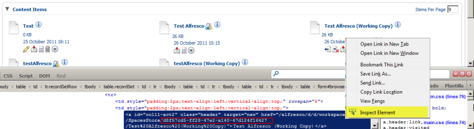
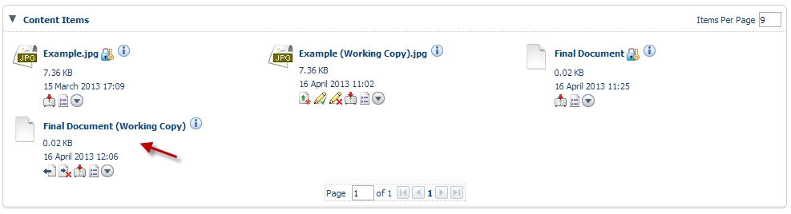
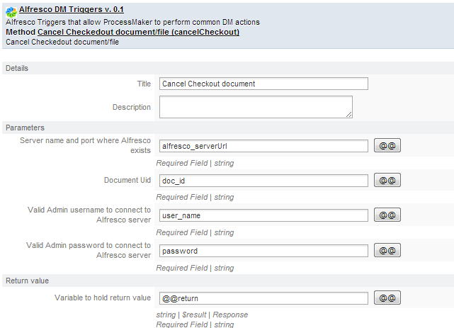
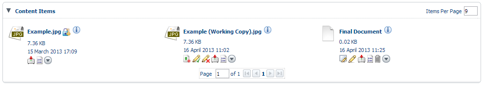
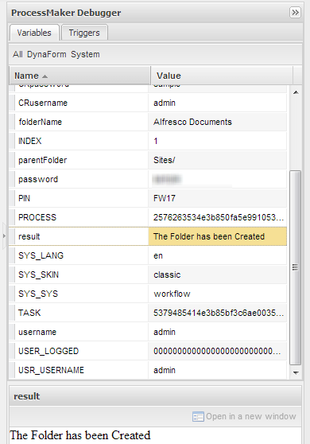
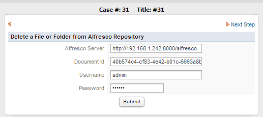

- Overview
- How the Triggers Work
- Requirements
- Installing and Configuration
- Creating an Alfresco Trigger
- Available functions
- Checkin document/file - checkIn()
- Checkout document/file - checkOut()
- Cancel Checkedout document/file - cancelCheckout()
- Create a folder in Alfresco Repository - createFolder()
- Delete a File/Folder - deleteObject()
- Download Document/File from Alfresco Repository - downloadDoc()
- Get a list of Checkedout Document/File from Alfresco Repository - getCheckedoutFiles()
- Get Children of the given folder - getFolderChildren()
- Upload file/document in Alfresco Repository - uploadDoc()
Overview
Alfresco is an open source Enterprise Content Management (ECM) system, for Microsoft Windows and Unix-like operating systems. At the core of the Alfresco system is a repository supported by a server that persists content, metadata, associations, and full text indexes. Programming interfaces support multiple languages and protocols upon which developers can create custom applications and solutions. Out-of-the-box applications provide standard solutions such as document management, records management, and web content management. Alfresco includes a content repository, an out-of-the-box web portal framework for managing and using standard portal content, a CIFS interface that provides file system compatibility on Microsoft Windows and Unix-like operating systems, a web content management system capable of virtualizing webapps and static sites via Apache Tomcat, Lucene indexing, and Activity workflow. The Alfresco system is developed using Java technology.
The integration between Alfresco and ProcessMaker, brings the possibility to manage the Alfresco environment; for this purpose many triggers may be created on ProcessMaker, which modify behavior of Alfresco content
How the Triggers Work
As the image below, it is possible to create trigger from ProcessMaker (ie. Create a Folder) which will affect directly in the Alfresco Environment. To see any changes on Alfresco login as an admin user and then go to Company Home inside Content Items all folders or any modifications made on them will display:

Requirements
- Alfresco v. 4.0. Currently only this version of Alfresco has been tested with ProcessMaker.
- ProcessMaker Version from version 2.0.32 to 2.0.45 and 2.8
Installing and Configuration
Follow the guide below. Also available in [1]
Installing Alfresco Community on Linux
The setup wizard for Linux installs all the software and components that you require for running Alfresco. This setup wizard installs Alfresco and additional software, including a Tomcat application server, PostgreSQL database, JDK, OpenOffice, SWFTools, and ImageMagick.
Download the following installation file: alfresco-community-4.0.x-installer-linux-x64.bin form the website
This Alfresco setup wizard is for 64-bit systems.
- Execute the downloaded file
- The setup wizard starts.
- On the Setup - Alfresco Community window, click Next.
- Select the installation language. This sets the language to be used for the remainder of the setup wizard.
On the Installation type window, choose how you want to use the setup wizard.
There are two types of installation in the setup wizard:
Option Description Easy Easy type installs Alfresco using the default options and configuration. This install type requires you to enter information in only two fields: the Alfresco install location and the administrator password. Choose this route to install Alfresco with the default environment. If you have previously installed Alfresco and the server is running, when you run this installation wizard again, you may be prompted to enter alternative port numbers for the components and services that you install, for example, for the Tomcat application server, FTP port, and the RMI port.
Advanced Advanced type installs Alfresco but lets you configure the server ports and service properties. You can also choose which additional components to install. To complete the Easy setup wizard:
- Select Easy, and then click Next.
- On the Installation folder window, click Next to accept the default location.
- On the Admin Password window, enter a password for the Administrator user (admin).
- Repeat the password, and then click Next.
- Click Next through the remaining windows in the setup wizard.
- Click Finish to complete the installation.
Go to the step for the Completing the Alfresco Community Setup Wizard window and launching Alfresco Share.
To complete the Advanced setup wizard, select Advanced and then click Next. Follow the remaining steps in this task.
- On the Select Components window, select the components that you want to install. Deselect the components that you do not want to install. You can select from the following components:
- Java
- PostgreSQL
- SharePoint
- Web Quick Start
- OpenOffice.
You cannot deselect the Alfresco component because it is installed by default.
- When you have finished selecting the components, click Next.
- On the Installation folder window, click Next to accept the default location. For example, the default location is /opt/alfresco-4.0.x. Alternatively, click the folder icon to choose another location.
- The Database Server Parameters window prompts you to enter a port number for your database.
On the Tomcat Port Configuration window, enter the following Tomcat configuration parameters:
- Web Server Domain
For example, the default is 127.0.0.1. The URL
http://127.0.0.1:8080/shareis based on the web server domain and the Tomcat port number that you specify on the Tomcat Port Configuration window. The default of 127.0.0.1 can be used on this machine to verify that Alfresco is running successfully. However, it is not an externally addressable URL, which means that it is not possible for users on other machines to access this URL. To make sure that other users can access the machine where Alfresco is installed, you need to define and create a publicly addressable name.- Tomcat port
For example, the default is 8080.
- Tomcat Shutdown port
For example, the default is 8005.
- Tomcat SSL Port
For example, the default is 8443.
- Tomcat AJP Port
For example, the default is 8009.
- On the Alfresco FTP Port window, enter a port number for the Alfresco FTP server.
- On the Alfresco RMI Port window, enter a port number for the RMI service.
- On the Admin Password window, type a password. Repeat the password, and then click Next. This sets the password for the Alfresco Administrator user account (admin).
- (Optional) If you are installing SharePoint Protocol Support, the Alfresco SharePoint Port window displays. Enter a port number, and then click Next.
- (Optional) If you are installing the OpenOffice component, the OpenOffice Server Port window displays. Enter a port number on which the OpenOffice server will listen.
- On the Service Startup Configuration window, you are presented with two options for starting up the Alfresco services.
Option Description Manual Sets the services to be started manually. Choose this option if you want to start the services manually. Auto Sets the services to start up automatically when you restart the machine. Select the services start up option, and then click Next.
- On the Ready to Install window, click Next.
The Installing window displays, showing the progress of the installation.
- On the Completing the Alfresco Community Setup Wizard window, click Finish.
This window shows check boxes that determine whether you will see the Readme file, the Getting Started web page, and also whether to launch Alfresco Share. By default, these options are selected and will launch when you click Finish. If you do not want to start Alfresco at this point, deselect the Launch Alfresco Community Share check box.
- 20. Click OK.
- The Alfresco server starts and then Alfresco Share launches in your default browser.
- It may take several minutes to start the Alfresco server and to launch Share. Your browser opens and tries to connect to http://127.0.0.1:8080/share.
- Log on to Alfresco Share as the admin user. Enter the password that you specified in the Admin Password window.
-
The Alfresco server is launched as a Windows service. To manage the server, open the Control Panel Services window. The services that will be running for an Alfresco install using the default options are:
- alfrescoPostgreSQL
- alfrescoTomcat
If you did not automatically launch Alfresco at the end of the installation wizard, to start Alfresco, you need to start all the services.
Manually start the Alfresco server:
service alfresco start
To start only the tomcat service:
service alfresco start tomcat
To fully stop Alfresco, you must stop all the services.
service alfresco stop
Installing Alfresco Community on Windows
The setup wizard for Microsoft Windows installs all the software and components that you require for running Alfresco. This setup wizard installs Alfresco and additional software, including a Tomcat application server, PostgreSQL database, JDK, OpenOffice, SWFTools, and ImageMagick.
-
Download one of the following installation files.
alfresco-community-4.0.x-installer-win-x32.exe alfresco-community-4.0.x-installer-win-x64.exe
There are two versions of the Alfresco installation wizard: one for 32-bit systems, and the other for 64-bit systems. Use the version appropriate for your system type.
- Double-click the downloaded file.
- On the Setup - Alfresco Community window, click Next.
- Select the installation language.
- This sets the language to be used for the remainder of the setup wizard.
On the Installation type window, choose how you want to use the setup wizard.
There are two types of installation in the setup wizard:
Option Description Easy Easy type installs Alfresco using the default options and configuration. This install type requires only two fields: install location and administrator password. Choose this route to install Alfresco with the default environment. If you have previously installed Alfresco and the server is running, when you run this installation wizard again, you may be prompted to enter alternative port numbers for the components and services that you install, for example, for the Tomcat application server, FTP port, and the RMI port.
Advanced Advanced type installs Alfresco but lets you configure the server ports and service properties. You can also choose which additional components to install. To complete the Easy setup wizard:
- Select Easy, and then click Next.
- On the Installation folder window, click Next to accept the default location.
- On the Admin Password window, enter a password for the Administrator user (admin).
- Repeat the password, and then click Next.
- Click Next through the remaining windows in the setup wizard.
- Click Finish to complete the installation.
Go to the step for the Completing the Alfresco Community Setup Wizard window and launching Alfresco Share.
On the Select Components window, select the components that you want to install. Deselect the components that you do not want to install.
You can select from the following components:
- Java
- PostgreSQL
- SharePoint
- Web Quick StartWhen you have finished selecting the components, click Next.
- OpenOffice
You cannot deselect the Alfresco component because it is installed by default.
- When you have finished selecting the components, click Next.
On the Installation folder window, click Next to accept the default location.
For example, the default location is C:\Alfresco.
Alternatively, click the folder icon to choose another location.
The Database Server Parameters window prompts you to enter a port number for your database.
Enter a suitable port number or click Next to accept the default of 5432.
On the Tomcat Port Configuration window, enter the following Tomcat configuration parameters:
- Web Server Domain
For example, the default is 127.0.0.1. The URL http://127.0.0.1:8080/share is based on the web server domain and the Tomcat port number that you specify on the Tomcat Port Configuration window. The default of 127.0.0.1 can be used on this machine to verify that Alfresco is running successfully. However, it is not an externally addressable URL, which means that it is not possible for users on other machines to access this URL. To make sure that other users can access the machine where Alfresco is installed, you need to define and create a publicly addressable name.
- Tomcat port
For example, the default is 8080.
- Tomcat Shutdown port
For example, the default is 8005.
- Tomcat SSL Port
For example, the default is 8443.
- Tomcat AJP Port
For example, the default is 8009.
- On the Alfresco FTP Port window, enter a port number for the Alfresco FTP server.
- On the Alfresco RMI Port window, enter a port number for the RMI service.
On the Admin Password window, type a password. Repeat the password, and then click Next.
This sets the password for the Alfresco Administrator user account (admin).
- (Optional) If you are installing SharePoint Protocol Support, the Alfresco SharePoint Port window displays. Enter a port number, and then click Next.
- (Optional) If you are installing the OpenOffice component, the OpenOffice Server Port window displays. Enter a port number on which the OpenOffice server will listen.
On the Service Startup Configuration window, you are presented with two options for starting up the Alfresco services.
Option Description Manual Sets the services to be started manually. Choose this option if you want to start the services manually. Auto Sets the services to start up automatically when you restart the machine. Select the services start up option, and then click Next.
On the Ready to Install window, click Next.
The Installing window displays, showing the progress of the installation.
On the Completing the Alfresco Community Setup Wizard window, click Finish
This window shows check boxes that determine whether you will see the Readme file, the Getting Started web page, and also whether to launch Alfresco Share. By default, these options are selected and will launch when you click Finish. If you do not want to start Alfresco at this point, deselect the Launch Alfresco Community Share check box.
20. Click OK.
The Alfresco server starts and then Alfresco Share launches in your default browser.
It may take several minutes to start the Alfresco server and to launch Share. Your browser opens and tries to connect to http://127.0.0.1:8080/share.
Log on to Alfresco Share as the admin user. Enter the password that you specified in the Admin Password window.
The Alfresco server is launched as a Windows service. To manage the server, open the Control Panel Services window. The services that will be running for an Alfresco install using the default options are:
- alfrescoPostgreSQL
- alfrescoTomcat
If you did not automatically launch Alfresco at the end of the installation wizard, to start Alfresco, you need to start all the services. Use the servicerun start script in the installation directory or select All Programs > Alfresco Community > Alfresco Community Service > Start Alfresco Community Service.
- To fully stop Alfresco, you must stop all the services. Use the scripts in the installation directory to start or stop the services: servicerun start and servicerun stop.
Creating an Alfresco Trigger
Go to DESIGNER tab and then select TRIGGERS option.

By clicking on New a list of triggers will display:

Choose Alfresco DM Triggers v. 0.1 (9), triggers will listed in order to created them.

Note: It is strongly recommended to activate the ProcessMaker Debugger to run triggers..
Requirements
- Enable debug to check if triggers has been created correctly
- To execute some triggers, Id of Files or Folders will be required, to get the ID of the them,it is recommended using web development tool like Firebug of Firefox, just right click over the name of the File/Folder, choose Inspect element and on the bottom side a link will display, on this link the id will be referenced, just copy it as the image below:

Available functions
Checkin document/file - checkIn()
checkIn(): check a document in to update the original in the Document Workspace. This removes the lock so the updated version is available for other users.
Parameter List
- alfrescoServerUrl: Server name and port where Alfresco exists including the port number.
- docUid document UID whose checkout needs to be cancelled.
- Comments: comment while checkin a document in Alfresco.
- user: Valid Admin username to connect to Alfresco server.
- pwd: Valid Admin password to connect to Alfresco server.
Example
- On ProcessMaker, create a Dynaform using the parameters mentioned before:

- Use the Trigger Wizard to create an Alfresco Trigger with the same variables of the dynaform.

Don't forget to define a result variable which will indicate the trigger response.
- On Alfresco check if the document is versioning.

Note: Working copy is the document versioning, when some offline modifications were made.
- Start a case and fill in the dynaform as the image below:

Obtain the Id of the working copy document using a devtool. In the case of this example, Final Document (working copy) will be used:
Click on Submit and check if the document has been checked using the ProcessMaker Debug:

Finally, check on Alfresco environment if the document was checkin:

Document must be updated, removing the working copy.
Checkout document/file - checkOut()
checkOut(): Locks the document and creates a working copy where changes can be made.
Parameter List
- alfrescoServerUrl: Server name and port where Alfresco exists including the port number.
- docUid Document UID whose checkout needs to be cancelled.
- user: Valid Admin username to connect to Alfresco server.
- pwd: Valid Admin password to connect to Alfresco server.
Example
- On ProcessMaker, create a Dynaform using the parameters mentioned before:

- Use the Trigger Wizard to create an Alfresco Trigger with the same variables of the Dynaform.

Don't forget to define a result variable which will indicate the trigger response.
- On Alfresco environment look for the document that will be lock, in the case of this example Final Document, and copy the ID.

- Start a case and fill in the Dynaform as the image below:

Click on Submit and check if the document has been checked out using the ProcessMaker Debug

On Alfresco Environment a working copy of the document must be created:

Cancel Checkedout document/file - cancelCheckout()
cancelCheckout(): Cancel a document that was previously checked out, it means delete a document working copy created.
Parameter List
- alfrescoServerUrl: Server name and port where Alfresco exists including the port number.
- docUid Document UID whose checkout needs to be cancelled.
- user: Valid Admin username to connect to Alfresco server.
- pwd: Valid Admin password to connect to Alfresco server.
Example
- On ProcessMaker, create a Dynaform using the parameters mentioned before:

- Use the Trigger Wizard to create an Alfresco Trigger with the same variables of the Dynaform.

Don't forget to define a result variable which will indicate the trigger response.
- On Alfresco create a working copy of a document.

For this example document will be "Example.jpg"
- Start a case and fill in the Dynaform as the image below:

Don't forget to obtain the ID of the document whose working copy was created.
Click on Submit and check if the document has been canceled:

As the image above, working copy was deleted.
Create a folder in Alfresco Repository - createFolder()
createFolder(): Creates a Folder in Alfresco repository.
Parameter List
- alfrescoServerUrl: Server name and port where Alfresco exists including the port number.
- parentFolder: Folder name (if any), in which a new folder has to be created.
- folderName: Name of the folder to be created.
- user: Valid Admin username to connect to Alfresco server.
- pwd: Valid Admin password to connect to Alfresco server.
Note: All the folders must be created inside the following path:
It is important to create folders inside Site folder because this folder is the only one shared. To create inside the other folders contact to your Administrator for permissions
Example
- Create a Dynaform with all the parameters mentioned before.

Use the Trigger Wizard to create an Alfresco Trigger with the same variables of the Dynaform.

Don't forget to define a result variable which will indicate the trigger response.
- Start a case and fill in the Dynaform as the image below:

Click on Submit, and check ProcessMaker Debugger, result variable must show The folder has been created message:

- Go to Alfresco environment, and look for Alfresco Documentation folder by going inside Company Home/Sites path:

If a folder needs to be created inside another, just indicate the path of it on the parentFolder variable, for example: Sites/NewAlfrescoFolder
Delete a File/Folder - deleteObject()
deleteObject(): Delete an object - Folder/File - from Alfresco Repository.
Parameter List
- alfrescoServerUrl: Server name and port where Alfresco exists.
- objetcId: Id of the Object(Folder/File) to be deleted.
- user: Valid Admin password to connect to Alfresco server
- pwd: Valid Admin password to connect to Alfresco server
Example
- On ProcessMaker, create a dynaform with the variables of Parameter List.

On ProcessMaker, use the Trigger Wizard to create an Alfresco Trigger with the same variables of the Dynaform.

Don't forget to define a result variable which will indicate the trigger response.
- Go to Alfresco and copy the ID of the Folder or File to be deleted, in the case of this example, ProcessMaker Documentation folder will be deleted.

- Start a case and fill in the Dynaform as the image below:

Go back to Alfresco Repository to check if the file has been deleted.
Download Document/File from Alfresco Repository - downloadDoc()
downloadDoc(): Download a Document/File from Alfresco Repository
Parameter List
- alfrescoServerUrl: Server name and port where Alfresco exists.
- pathFile: Path, in Alfresco Server, where file to be downloaded, is located.
- pathFolder: Server Location where the file will be downloaded.
- user: Valid Admin password to connect to Alfresco server
- pwd: Valid Admin password to connect to Alfresco server
Get a list of Checkedout Document/File from Alfresco Repository - getCheckedoutFiles()
getCheckedoutFiles(): Get a list of Checkedout Document/File from Alfresco Repository
Parameter List
- alfrescoServerUrl: Server name and port where Alfresco exists.
- user: Valid Admin password to connect to Alfresco server
- pwd: Valid Admin password to connect to Alfresco server
Get Children of the given folder - getFolderChildren()
getFolderChildren():Get Children of the given folder
Parameter List
- alfrescoServerUrl: Server name and port where Alfresco exists.
- folderId: FolderId of the Folder whose children is to be listed.
- user: Valid Admin password to connect to Alfresco server
- pwd: Valid Admin password to connect to Alfresco server
Result will be display in an array as follows:

Note: Result needs to be unserialized, so is possible to create a grid to display those results.
Upload file/document in Alfresco Repository - uploadDoc()
uploadDoc(): Upload an specific file form the user computer.
Parameter List
- alfrescoServerUrl: Server name and port where Alfresco is installed.
- fileSource: Source of the File from where the file will be uploaded.
- fileTitle: Title of the File.
- fileDesc: Description of the File.
- docType: Type of File.
- user: Valid username to connect to Alfresco server
- pwd : Valid Admin password to connect to Alfresco server